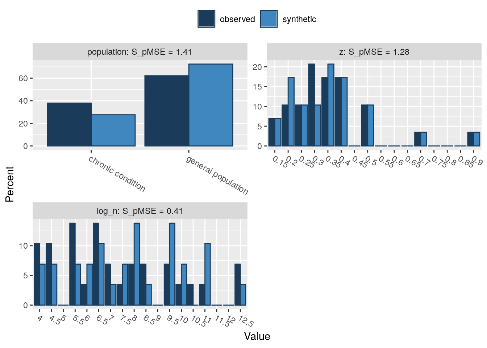

box::use(pins[board_folder, pin_read], utils[read.csv])
workshop_dir <- file.path("outputs", "health-wellbeing")
versions <- read.csv(
file.path(workshop_dir, "dataset-versions.csv"),
colClasses = "character"
)
full_version <- versions$version[versions$scope == "all"]
stopifnot(length(full_version) == 1L)
data_board <- board_folder(
file.path(workshop_dir, "data_store"),
versioned = TRUE
)
health_full <- pin_read(
data_board, "health_wellbeing", version = full_version
)
stopifnot(nrow(health_full) == 29L)
original <- data.frame(
population = factor(health_full$population),
z = atanh(health_full$cor),
log_n = log(health_full$n)
)13 Optional extras and concluding discussion
85–90 minutes · synthpop and vetiver
13.1 Introduction
In the final five minutes, we will discuss what another researcher needs to rerun or verify our analysis. If time allows, the instructor will show a distribution comparison from synthpop and a model version history from vetiver. The code below is for follow-up with the prepared workshop environment.
13.2 Prepare the study summaries
We will use the saved pin identifier for the full 29-study dataset. Run the setup from the project root with box and pins. Use the versions CSV and board from the dataset versioning exercise. Dataset storage and versioning
z is the Fisher transformation of the correlation, and log_n is the natural log of the study sample size. The example uses study summaries and leaves out the original study labels and country column.
13.3 Synthetic study summaries
With synthpop available, we will use the CART synthesis method and seed 123 so we can repeat the classroom run in the same environment. We convert the generated values to the original scales and give the new rows synthetic labels. The generated sample sizes describe synthetic rows.
box::use(synthpop[compare, syn])
synthetic <- syn(
original,
method = "cart",
seed = 123,
print.flag = FALSE
)
synthetic_data <- data.frame(
author = sprintf("Synthetic %02d", seq_len(nrow(synthetic$syn))),
cor = tanh(synthetic$syn$z),
n = round(exp(synthetic$syn$log_n)),
population = synthetic$syn$population
)
head(synthetic_data) author cor n population
1 Synthetic 01 0.290 85070 general population
2 Synthetic 02 0.360 3722 general population
3 Synthetic 03 0.620 19000 general population
4 Synthetic 04 0.388 3030 general population
5 Synthetic 05 0.202 1134 chronic condition
6 Synthetic 06 0.320 15184 general populationcompare(synthetic, original)Calculations done for population
Calculations done for z
Calculations done for log_n
Comparing percentages observed with synthetic
Selected utility measures:
pMSE S_pMSE df
population 0.003036 1.408907 1
z 0.011063 1.283333 4
log_n 0.003539 0.410534 4Inspect the distributions of population, z, and log_n. The comparison describes the resemblance of the two tables on these variables. Similar marginals can coexist with differences in their relationships and in downstream estimates. Treat this as a public teaching example. A privacy guarantee would require a validated mechanism and accounting beyond this distribution comparison. synthpop documentation
13.4 Model versioning
We will use vetiver and pins to store two illustrative linear regressions under the same model name. The second adds log sample size as a predictor. Both regressions give each study equal weight and serve to illustrate model versioning. The core meta-analysis uses study precision and between-study variance when pooling effects.
Reuse the local model board across renders and keep the version identifiers for each pair of fits. Cached model chunks reuse their recorded identifiers. Refreshing the cache fits a new pair and retains earlier versions in the board. Keep the board with its document cache; if you remove the board, refresh the cache when rendering again.
box::use(
pins[pin_exists, pin_versions],
stats[lm],
vetiver[vetiver_model, vetiver_pin_write, vetiver_pin_read]
)
model_board <- board_folder(
file.path(workshop_dir, "model_store"),
versioned = TRUE
)
model_name <- "health_wellbeing"
code_revision <- system2("git", c("rev-parse", "HEAD"), stdout = TRUE)
stopifnot(length(code_revision) == 1L, grepl("^[0-9a-f]{40}$", code_revision))
model_source <- list(
data_version = full_version,
code_revision = code_revision,
r_version = as.character(getRversion()),
vetiver_version = as.character(utils::packageVersion("vetiver"))
)previous_versions <- if (pin_exists(model_board, model_name)) {
pin_versions(model_board, model_name)$version
} else {
character()
}
model_v1 <- lm(z ~ population, data = original)
v1 <- vetiver_model(
model_v1,
model_name = model_name,
description = "Illustrative regression on population.",
metadata = model_source
)
vetiver_pin_write(model_board, v1)
first_version <- setdiff(
pin_versions(model_board, model_name)$version, previous_versions
)
stopifnot(length(first_version) == 1L)
model_v2 <- lm(z ~ population + log_n, data = original)
v2 <- vetiver_model(
model_v2,
model_name = model_name,
description = "Illustrative regression on population and log sample size.",
metadata = model_source
)
vetiver_pin_write(model_board, v2)
model_history <- pin_versions(model_board, model_name)
second_version <- setdiff(
model_history$version, c(previous_versions, first_version)
)
stopifnot(length(first_version) == 1L, length(second_version) == 1L)
model_history# A tibble: 2 × 3
version created hash
<chr> <dttm> <chr>
1 20261119T103756Z-e3f44 2026-11-19 10:37:56 e3f44
2 20261119T103756Z-e5ae0 2026-11-19 10:37:56 e5ae0When you use vetiver_pin_read() without a version, it selects the board’s current version. Pass an explicit identifier when you want to reproduce a previous prediction or inspect its input requirements. Compare the input columns of the two retrieved models.
stored_v1 <- vetiver_pin_read(
model_board, model_name, version = first_version
)
stored_v2 <- vetiver_pin_read(
model_board, model_name, version = second_version
)
names(stored_v1$prototype)[1] "population"names(stored_v2$prototype)[1] "population" "log_n" stored_v2$metadata$user
$user$data_version
[1] "20261119T103524Z-11d00"
$user$code_revision
[1] "73d13ddebe53a761cc75802fc57e133b2dfe4d21"
$user$r_version
[1] "4.4.1"
$user$vetiver_version
[1] "0.2.8"
$version
[1] "20261119T103756Z-e3f44"
$url
NULL
$required_pkgs
NULLThe model’s metadata retains its training pin version and software context. Keep the fitted objects and generated tables local until you have checked applicable release terms. Vetiver and versioned models
13.5 Concluding discussion
- If you received only the report, which versions and files would you ask for to rerun it?
- If the original data could not be shared, what could a reader test with a synthetic dataset, and what would require access to the originals?
- Which single change would make your own research workflow easier for a collaborator to inspect and rerun?
A useful checkpoint is to point to the exact data version, analysis revision, environment, and archive citation for one reported result. If you try the optional model exercise, check that the first model expects population and the second also expects log_n.